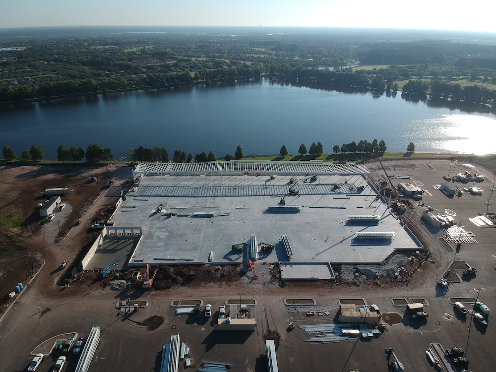

About Us
Marin Brothers, Inc. is a family run company founded by Abel Marin in 2006. Abel is a professional carpenter with over twenty years experience. At the beginning of his career, he worked mostly in the residential construction industry. Soon, the quality and timeliness of his work, along with his down-to-earth nature and honesty, became well-known in the construction community. This gained him respect and recognition from top general contractors, inspiring him to move 100% into commercial construction with his own professional carpentry company, Marin Brothers, Inc.
Abel now owns and runs a highly successful subcontracting business, working under the top general contractors in the construction industry such as Jackson Dean Construction, Moss Construction, Whiting-Turner Construction, Ledcor Construction, and Grahm Construction. Their projects include many of leading retail and commercials companies such as Costco, Target, Simon Malls, DHL, and Pfizer.
Since the beginning, Marin Brothers, Inc. has stood for not only skilled craftsmanship and high quality labor, but also for honesty, integrity, reliability, dependability, and dedication. GCs who have experienced not only the quality of their services, but the ease of working with Abel and his crew, always return to Marin Bros for future projects. Today, Marin Bros. plays a leading role in the industry by providing exceptional on-time workmanship, employing a highly skilled labor force, all while maintaining the highest standards of quality.